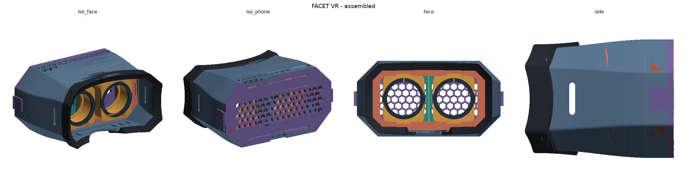
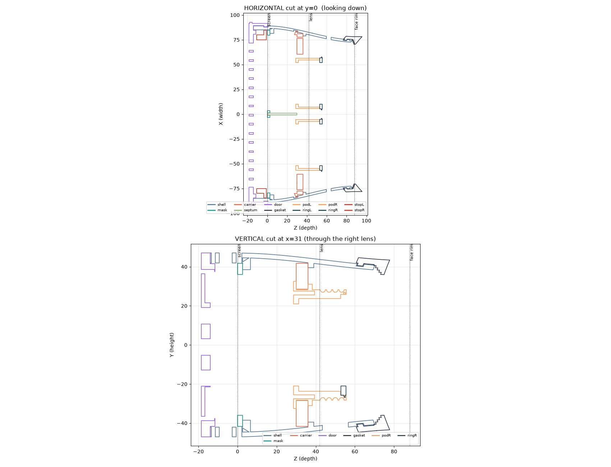

Print the headset.
Eleven parts, nineteen pieces, about $3 of filament and a $10 pair of lenses. It holds any phone up to 168 × 82 × 11 mm — which covers every current Pro Max and Ultra — and the lens spacing adjusts from 56 to 68 mm.

What you need
A printer
Any FDM machine with a 200 mm bed. PLA or PETG, 0.2 mm layers, three perimeters, 20% infill. Only one of the eleven parts needs supports.
Two lenses
Ø47 mm biconvex, about 21 mm thick, roughly 45 mm focal length — the standard pair sold for phone VR headsets, usually under $10 for two.
A metre of webbing
25 mm elastic strap. The two buckles are printed. Three attachment points: both sides and over the top.
The parts
| Part | Qty | Orientation | Notes |
|---|---|---|---|
| 01 shell | 1 | phone mouth down | the long print, about 110 cm³ |
| 02 screen mask | 1 | flat | twin windows and the light barrier |
| 03 lens carrier | 1 | plate down, hooks up | |
| 04 lens pod | 2 | flange down | slides sideways to set IPD |
| 05 lens ring | 2 | flat | split snap ring |
| 06 septum | 1 | flat on its side | stops each eye seeing the other half |
| 07 door | 1 | outside down | printed leaf springs clamp the phone |
| 08 phone spacer | 4 | flat | use none to two per side |
| 09 face gasket | 1 | socket down | TPU, and the one part that needs supports |
| 10 strap buckle | 2 | flat | tri-glide for 25 mm webbing |
| 11 focus shim | 4 | flat | 1 mm each, optional |
If you have no TPU, skip the gasket entirely and stick a strip of 8 mm adhesive foam weatherstrip around the face rim instead. The rim is already shaped to the face and is comfortable bare — the gasket is a refinement, not a requirement.
Assembly
-
Lenses into the pods
Drop a lens into each pod from the face side, then press a ring in until the snap bead clicks into its groove. Add shims behind the lens first if you want it further from the screen.
-
Pods into the carrier
Push each pod through the carrier's slot from the screen side until the two barbs snap past the far face. They now slide left and right to set the lens spacing.
-
Carrier into the shell
Slide it in through the phone mouth, lens side first, until the side hooks click into their pockets. The shell's taper stops it at the right depth.
-
Septum, then screen mask
The septum slides in at the centre line, tabs first. The mask then drops into the tray and its centre rib captures the septum's remaining tab.
-
Gasket and strap
Push the gasket over the face rim until the bead drops into the groove. Thread the webbing through both side slots and the top slot, using the buckles to adjust.
-
Phone in, door on
Lay the phone in screen-down. Use spacers at the ends if it is much shorter than 168 mm. Close the door — the leaf springs press the phone against the mask. Open the app, switch to headset view, and you are running.
Changing the design
The headset is not a mesh someone edited by hand — it is generated by a parametric script, so every dimension is a number you can change. Lens size, lens spacing range, phone envelope, wall thickness, the shroud's two end sections and the curvature of the face rim are all constants at the top of one file.
python3 -m venv venv && ./venv/bin/pip install numpy trimesh manifold3d mapbox-earcut rtree
./venv/bin/python headset-source/build.py # writes stl/
./venv/bin/python headset-source/verify.py # interference, clearance, printability
The verify script is worth running if you change anything. It checks that no two assembled parts overlap, that the lens pods still clear the carrier and septum across the full spacing range, that the carrier still fits through the shell's taper, and it measures unsupported overhang per part by ray-casting every downward-facing triangle.
